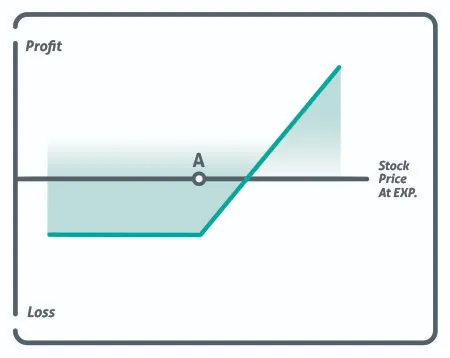

Long call options give an investor a chance to bet on whether the underlying stock will rise in value or stay above a strike price. This is one of two bull option contract types, the other being selling put option contracts. The Long call option strategy allows traders to profit without having all the risk associated with owning the stock outright. Because calls are less expensive than the stock itself, a trader can leverage more shares than they could with just the stock.

A trader should be careful when buying out-of-the-money short-term calls. They may be attractive to new traders as they are cheap to buy, but often end up being a losing endeavor. Remember, a call option’s life span is relatively limited as there is the risk that the stock will not rise above the strike price in time to make any profits, and the option could end up decaying until it is worthless.
In the chart above, the holder of the call option does not start to cut into their cost until the stock price reaches the strike price, represented by point A. They then start to profit once the stock trades over the strike price by an amount equal to the premium they paid for the call.
For an investor who buys a call option, they have the right to purchase stock at the strike price up until the date the option contract expires. In most cases, one option contract gives the call option holder the right to buy 100 shares of stock. Just like stock, as the value of the underlying asset goes up in value, so do the call options. The holder of the call option may either exercise the contract and take delivery of the stock or sell the call option before the expiration date.
If the stock’s price is above the strike price on expiration, the profit/loss is calculated by taking the stock price and then subtracting the strike price and the premium paid, then multiplying that by the number of controlled shares.
Maximum Loss = Net Premium Paid
The maximum gain for a long call strategy is unlimited as the stock can continue to move up gaining more and more value.
The breakeven on a long call option is calculated by adding the premium from the strike price.
If a stock is trading $100 and an investor wants to buy a 110-strike price call for $2.0, then the breakeven would be $112.00.
If stock XYZ is trading at $100 per share, an investor can buy a 100 strike price call option for only $10. Because one contract controls 100 shares, the price the investor will pay for this option is $1000. ($10 X 100 = $1000)
The gamble is that the underlying stock will climb past the $100 mark by at least $10 if the investor wants to see any profit from this transaction. For every dollar the stock rises above the strike price (after the first $10) the investor will see a $100 gain from this option, and that can be a real moneymaker if the stock continues to trade higher.
Conversely, if the stock stays at $100 a share, shown by point A on the graph, or goes lower than the strike price, then the option will expire worthless resulting in a a $10 loss for the investor, which is 100% of their investment.
The long call is an investment practice that allows the investor to wager on the increase of the stock. The investor must be able to handle the potential loss of the entire premium if they are wrong. A trader can earn much more through call ownership compared to owning the stock, but the risk of losing is also much higher.